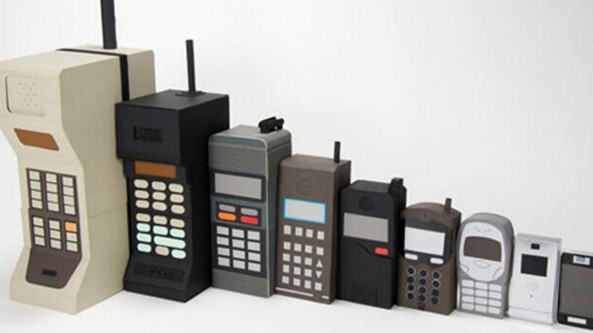
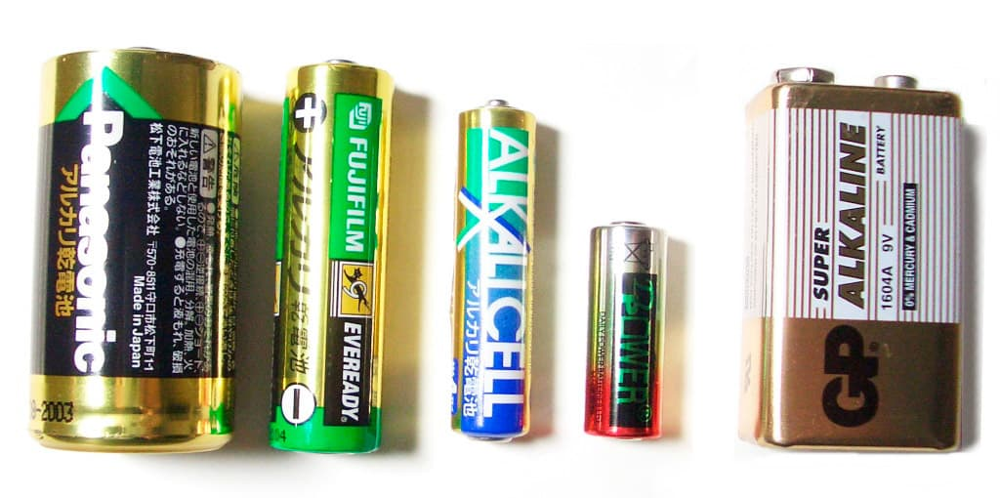
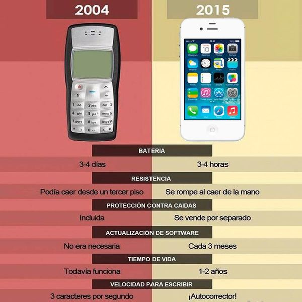

Los celulares antiguos, por más que aparentan ya tener mucho tiempo, realmente no pasa de las 3 décadas desde que se popularizaron, y estos presentaron una gran cantidad de cambios en su tiempo, una minoría comparándolo a los celulares actuales. Aun que se piensa que ya son obsoletos, realmente siguen sirviendo para la función de mensajería (principalmente los celulares que salieron como hace mínimo 15-20 años) o bueno, la mayoría, algunos podrán usarse para mensajería pero solo si se modifican.
Antiguamente se utilizaban baterías hechas con Zinc (actualmente únicamente baterías de control remoto, reloj, etc, usan baterías hechas con Zinc), pero debido a el daño que llegaba a representar esto, se cambio a baterías de aleación de Níquel y Cadmio.
El sistema operativo que poseían los celulares antiguos, no generaba tantos procesos, por ende el consumo de su "poca" batería, era muy baja y por eso su duración era muy grande. Al avanzar el tiempo, esto siguió "Mejorando" hasta la generación que presento Apple, la cual mostraba celulares con la capacidad de hacer mas procesos por el cual, hizo que las baterías duren mucho menos.
